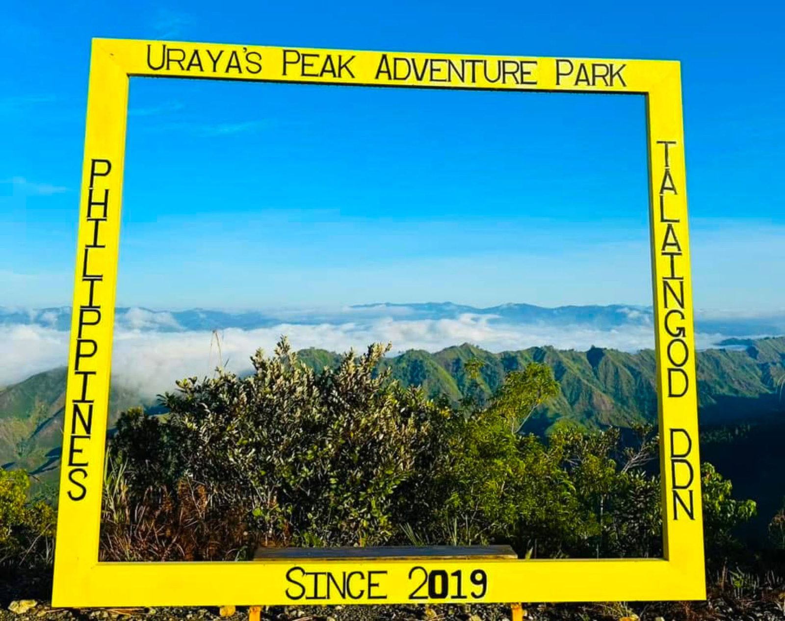
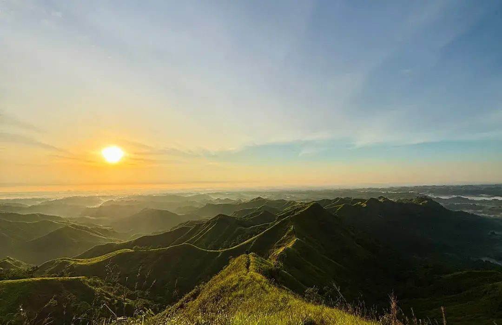

Island Garden City of Samal
An island city in Davao Gulf with white-sand beaches, clear reefs, and green hills. Reach it by a short boat ride from Davao City.
Explore Island Garden City of Samal
Plan your trip to Davao del Norte, in the Davao Region of Mindanao. Find beaches, caves, waterfalls, mountains, and city stops in one simple guide.
Browse destinations View the galleryStart with these eight places. Each one offers something different.
An island city in Davao Gulf with white-sand beaches, clear reefs, and green hills. Reach it by a short boat ride from Davao City.
Explore Island Garden City of Samal
Look down into a cave where a very large colony of fruit bats roosts during the day.
Explore Monfort Bat Cave
Cool turquoise pools and small cascades set in a shady forest, great for a relaxing swim.
Explore Hagimit Falls
Known as the Banana Capital of the Philippines, with a lively city center and nearby farmland.
Explore Panabo City
The provincial capital and a practical base with shops, restaurants, and city services.
Explore Tagum City
A green public park in Tagum City where families stroll, bike, and relax. At night the trees glow with warm lights and star lanterns.
Explore E-Park (Energy Park), Tagum City
A mountain getaway in Sitio Uraya, Sto. Niño, Talaingod, with views above the clouds, a forest lodge, a pool, and a restaurant.
Explore Uraya’s Peak, Talaingod
A hiking destination in Sto. Tomas with grassy ridgelines and wide views of the surrounding mountains. Start early to catch the sunrise.
Explore Mt. Megatong, Sto. TomasReefs, falls, and caves are a short trip from the main towns.
Clear descriptions help you choose where to go and what to bring.
Families, students, and friends can all find something to enjoy.
Read about each place, then send us a question if you need help.
Ask a question